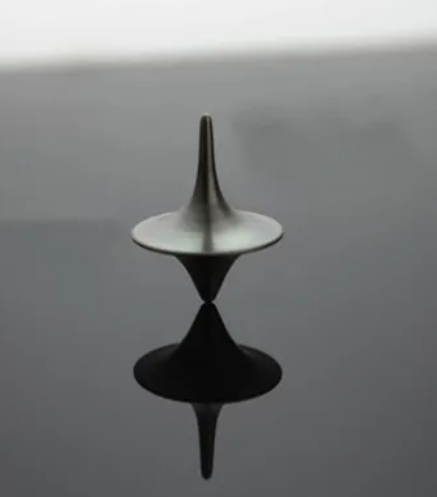

Domaine de physique
Mécanique classique

Mécanique classique
La mécanique classique décrit le mouvement des objets à notre échelle. Son idée directrice est simple : connaître l'état d'un système et les forces qui agissent sur lui permet de prévoir son évolution.
Repérer le mouvement
La cinématique décrit position, vitesse et accélération sans chercher encore la cause du mouvement. Le choix d'un référentiel est essentiel : une trajectoire et une vitesse n'ont de sens qu'en précisant depuis quel observateur on les mesure.
La dynamique relie ce mouvement aux interactions. La relation fondamentale est $\vec{F}=m\vec{a}$ : la résultante des forces impose une accélération proportionnelle et de même direction.
Les trois lois de Newton
Le principe d'inertie affirme qu'un objet conserve son repos ou son mouvement rectiligne uniforme lorsque la somme des forces est nulle. La deuxième loi quantifie la réponse d'un objet à une force. Enfin, le principe d'action-réaction rappelle que toute interaction est réciproque : les forces ont même intensité et directions opposées, mais s'appliquent sur deux objets distincts.
Les grandeurs conservées
L'énergie mécanique associe l'énergie cinétique au mouvement et l'énergie potentielle à la position. En l'absence de frottements, elle se conserve : un pendule échange ainsi continuellement énergie potentielle et énergie cinétique.
La quantité de mouvement $\vec{p}=m\vec{v}$ se conserve pour un système isolé. Le moment cinétique joue un rôle analogue pour les rotations : il explique notamment la stabilité d'une toupie ou l'accélération d'un patineur qui rapproche ses bras.
Une méthode pour résoudre un problème
Commencer par isoler le système et dessiner les forces. Choisir un référentiel et des axes, écrire la deuxième loi de Newton dans ces axes, puis utiliser les conditions initiales. Vérifier enfin les unités et la cohérence physique du résultat.
Pour expérimenter l'échange d'énergie dans un système simple, voir : Pendule.html